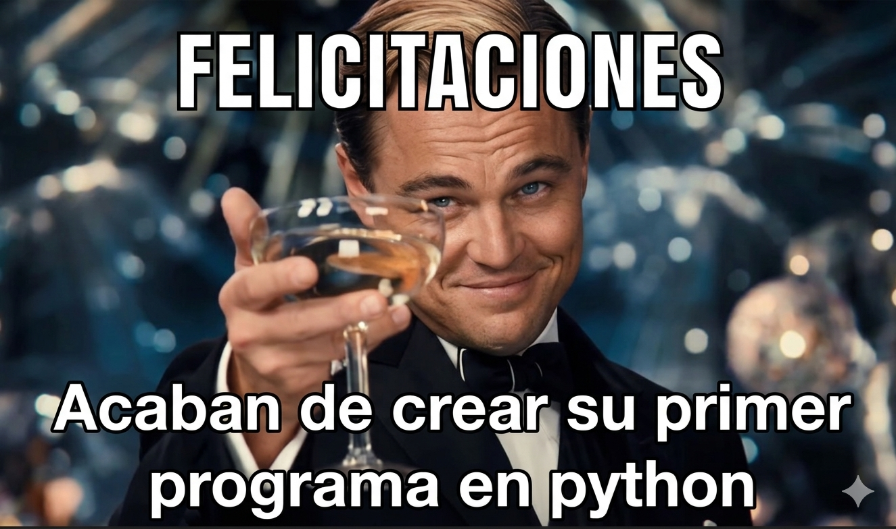

El lenguaje de programación más popular del mundo
Módulo 1 — Fundamentos de PythonHistoria, características y por qué importa conocerlo hoy.
Casos de uso reales: web, datos, IA, automatización, ciencia.
Salarios, demanda, empresas y por qué Python domina el sector.
Instalación, entornos de trabajo y tu primer programa.
Escribe instrucciones cercanas al lenguaje humano, no al lenguaje de la máquina.
No necesita compilarse. El código se ejecuta línea a línea en tiempo real.
Sirve para web, datos, IA, scripts, ciencia, juegos y mucho más.
Durante las vacaciones de Navidad en el Centrum Wiskunde & Informatica (CWI), Países Bajos. Lo llamó "Python" por el show de comedia Monty Python's Flying Circus.
Ya incluía clases, manejo de excepciones, funciones y módulos. Una base sólida desde el inicio.
Gran salto en productividad. Fue la versión dominante por más de una década.
Incompatible con Python 2, pero más limpio y consistente. Hoy es el estándar.
Lidera rankings globales (TIOBE, Stack Overflow, IEEE). Más de 8 millones de desarrolladores activos.
Python tiene una filosofía de diseño escrita por Tim Peters. Se puede ver ejecutando import this en cualquier terminal Python.
El mismo programa "Hola Mundo" en distintos lenguajes:
Java
public class Main { public static void main(String[] args) { System.out.println("Hola Mundo"); } }
C++
#include <iostream> using namespace std; int main() { cout << "Hola Mundo" << endl; return 0; }
Python ✦
print("Hola Mundo")
Python potencia algunos de los sitios web más grandes del mundo. Con frameworks como Django y FastAPI puedes construir desde una API simple hasta plataformas de millones de usuarios.
Framework completo. Incluye base de datos, autenticación, panel admin. Ideal para aplicaciones grandes.
Framework moderno y rápido para APIs. Validación automática, documentación generada sola, alto rendimiento.
Minimalista y flexible. Perfecto para APIs pequeñas o cuando quieres control total.
Empresas que usan Python para su backend:
Python es el estándar de facto en Data Science, Machine Learning e IA. Investigadores y empresas lo usan porque tiene el ecosistema más completo para trabajar con datos.
Computación numérica y matrices.
Análisis y manipulación de datos.
Deep Learning (Google).
Deep Learning (Meta/Facebook).
Machine Learning clásico.
Visualización de datos.
El campo de Data Science tiene Python como requisito casi universal en ofertas laborales. No saber Python es una desventaja competitiva seria en este campo.
Una de las razones por las que Python se popularizó tanto: permite automatizar tareas repetitivas con muy poco código.
Ejemplo: Renombrar 1,000 archivos
import os carpeta = "mis_archivos" archivos = os.listdir(carpeta) for i, archivo in enumerate(archivos): nuevo_nombre = f"archivo_{i+1}.txt" os.rename(archivo, nuevo_nombre) print("¡Listo! Archivos renombrados.")
Pentesting, análisis de vulnerabilidades, herramientas forenses. Kali Linux lo incluye por defecto.
Pygame para juegos 2D. Blender usa Python como lenguaje de scripting para animación 3D.
Física, bioinformática, astronomía, química computacional. SciPy, AstroPy, BioPython.
Raspberry Pi usa Python como lenguaje oficial. Control de hardware, sensores y dispositivos.
Trading algorítmico, análisis cuantitativo, modelos de riesgo. JPMorgan, Goldman Sachs.
AWS, Google Cloud y Azure tienen SDKs en Python. Ansible, Terraform y muchas herramientas DevOps.
El lenguaje más enseñado en universidades del mundo. MIT, Harvard, Stanford lo usan en sus cursos intro.
Reportes, dashboards, análisis de KPIs. Integración con Power BI, Tableau y herramientas de BI.
Python ocupa el #1 por tercer año consecutivo, superando a Java y C++ por primera vez en la historia del índice.
Python es el lenguaje más querido y más usado según encuesta de 90,000 desarrolladores en 2024.
Python superó a JavaScript como el lenguaje con más repositorios activos en GitHub en 2024.
Top 5 lenguajes más usados — 2025:
Rango salarial anual — Estados Unidos (USD)
En modo remoto (trabajo para empresas extranjeras desde LATAM)
Empresas de todos los sectores y tamaños dependen de Python en producción:
Python fue uno de los 3 lenguajes oficiales desde su fundación. La mayoría de sus herramientas internas.
Python en toda su infraestructura de datos, recomendaciones y operaciones en la nube.
El backend completo corre en Django. Más de 2,000 millones de usuarios.
Análisis de datos de misiones, simulaciones, control de sistemas.
ChatGPT, GPT-4, DALL-E — todo el desarrollo de modelos en Python.
Análisis de datos, recomendaciones musicales y pipelines de datos.
Modelos financieros, trading algorítmico y análisis de riesgo.
Infraestructura cloud, Lambda functions, herramientas internas.
Python es un lenguaje interpretado. Esto significa que hay un programa llamado intérprete que lee tu código y lo ejecuta directamente.
Archivo .py en tu editor
Python.exe / python3 procesa cada línea
Ves el output inmediatamente
Diferencia con lenguajes compilados:
| Aspecto | Python (Interpretado) | C++ (Compilado) |
|---|---|---|
| Ejecución | Directo | Compilar primero |
| Velocidad de desarrollo | Muy rápida | Lenta |
| Rendimiento en ejecución | Bueno | Excelente |
| Facilidad de aprendizaje | Alta | Baja |
| Portabilidad | Total | Requiere recompilar |
python --versionbrew install python3python3 --versionPython 3 suele venir preinstalado. Verificar con python3 --version. Si no: sudo apt install python3
Verificar instalación en la terminal:
$ python --version Python 3.12.0 $ python Python 3.12.0 (main, Oct 2 2023) >>> print("Hola") Hola >>>
python no funciona, cierra y abre de nuevo la terminal después de instalar. El PATH necesita recargarse.
Editor gratuito de Microsoft. Ligero, extensible, con extensión oficial de Python que incluye autocompletado, depuración y terminal integrada.
IDE profesional dedicado exclusivamente a Python. Muy potente para proyectos grandes. La versión Community es gratuita.
Perfecto para Data Science. Mezcla código, texto y gráficas en el mismo documento. Usado en universidades y por científicos.
Jupyter en la nube, gratis. Sin instalar nada. Perfecto para aprender o trabajar desde cualquier dispositivo.
IDE diseñado específicamente para principiantes. Simple, visual, muestra el paso a paso de ejecución.
Viene incluido con Python. Básico pero funcional. Suficiente para empezar sin instalar nada extra.
Por convención, el primer programa en cualquier lenguaje imprime "Hello, World!". En Python:
print("Hello, World!")
Un programa más interactivo:
# Pedimos el nombre al usuario nombre = input("¿Cómo te llamas? ") # Saludamos con su nombre print(f"¡Hola, {nombre}! Bienvenido a Python 🐍") # Mostramos información básica edad = int(input("¿Cuántos años tienes? ")) print(f"En 10 años tendrás {edad + 10} años.")
Lo que aprendemos con este programa:
print() — muestra texto en pantallainput() — lee texto que escribe el usuarioint() — convierte texto a número enterof"..." — f-string: inserta variables dentro de texto# — comentario: Python lo ignora al ejecutarnombre = "valor"
Python usa indentación (espacios al inicio de línea) para definir bloques de código. No hay llaves {}.
# Variables — sin declarar tipo nombre = "Ana" edad = 25 activo = True # Condicional — la indentación delimita el bloque if edad >= 18: print("Es mayor de edad") else: print("Es menor de edad") # Bucle for i in range(3): print(f"Iteración {i}") # Función def saludar(nombre): return f"Hola, {nombre}!"
Convención: usar 4 espacios por nivel de indentación (VS Code lo hace automáticamente).
Python viene con pip, una herramienta que te permite instalar cualquiera de los 500,000+ paquetes disponibles en internet con un solo comando.
Es como una "tienda de aplicaciones" para Python: encuentras una librería que resuelve tu problema, la instalas en segundos y ya está disponible en tu código.
Paquetes populares y para qué sirven:
Comandos esenciales de pip:
# Instalar un paquete $ pip install requests # Instalar versión específica $ pip install requests==2.31.0 # Ver paquetes instalados $ pip list # Desinstalar $ pip uninstall requests # Guardar dependencias del proyecto $ pip freeze > requirements.txt # Instalar desde requirements.txt $ pip install -r requirements.txt
| Característica | Python | JavaScript | Java | C++ |
|---|---|---|---|---|
| Facilidad de aprendizaje | Muy alta | Media | Baja | Muy baja |
| Velocidad de desarrollo | Muy rápida | Rápida | Media | Lenta |
| Data Science / IA | Dominante | Casi nulo | Existe | Bajo nivel |
| Desarrollo web backend | Excelente | Excelente | Excelente | No aplica |
| Automatización / scripts | Excelente | Limitado | Posible | Complejo |
| Rendimiento puro | Bueno | Bueno | Alto | Máximo |
| Demanda laboral (2025) | #1 global | #2 global | #3 global | #4 global |
| Comunidad y recursos | Enorme | Enorme | Grande | Grande |
Documentación oficial en español. Referencia completa de todos los módulos, funciones y características del lenguaje.
Problemas de programación para practicar. Las empresas usan estas plataformas en sus entrevistas técnicas.
Cursos interactivos gratuitos con ejercicios en el navegador. Ideal para comenzar sin instalar nada.
¿Qué es, para qué sirve, instalación y primeros pasos. ← Estamos aquí
Strings, enteros, flotantes, booleanos, None. Operaciones y conversiones.
Condicionales (if/elif/else) y bucles (for/while).
Definir funciones, parámetros, retorno, alcance de variables.
Crear, acceder, modificar y recorrer listas. Métodos principales.
Consumir APIs REST, requests, construir apps web simples.
Construir APIs profesionales con Python. Endpoints, validación, documentación automática.
Instala Python desde python.org y VS Code con la extensión de Python.
Crea un archivo llamado mi_primer_programa.py
Escribe el código de la derecha y ejecútalo con python mi_primer_programa.py
# Mi primer programa en Python # Cambia los datos por los tuyos nombre = "Tu nombre aquí" carrera = "Tu carrera aquí" año = 2025 print("=" * 35) print(f" Hola, soy {nombre}") print(f" Carrera: {carrera}") print(f" Año: {año}") print("=" * 35) print("¡Python instalado correctamente! 🐍")
input() para que el programa le pida el nombre al usuario en vez de tenerlo escrito fijo.
Python no se aprende viendo clases — se aprende escribiendo código.
El mejor momento para empezar es ahora.